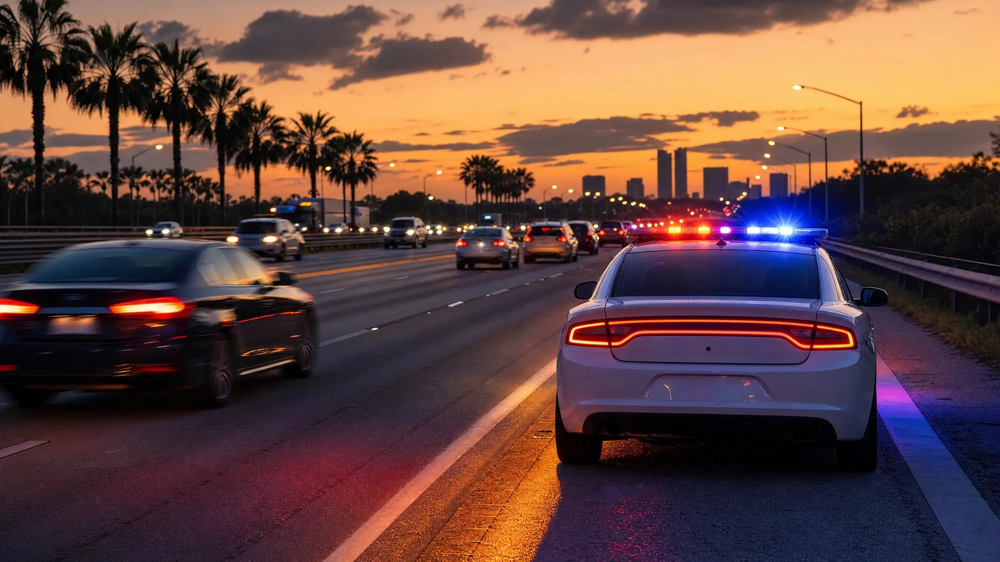

Labor Day Traffic Stops in Florida: Know Your Rights

If it feels like there are more patrol cars on I-4 every Labor Day weekend, you're not imagining it — and it isn't random. The holiday surge is a planned, federally funded enforcement operation with a defined start date, an end date, and reporting requirements. I worked those details as a Florida Highway Patrol trooper. Here's how the operation works, what the Constitution still requires before any officer can stop you, and which rights you keep at the window.
Why Labor Day Weekend Means More Traffic Stops
Each year, the National Highway Traffic Safety Administration funds the "Drive Sober or Get Pulled Over" campaign, and Florida's Law Enforcement Liaison program coordinates it statewide, urging agencies to add patrols during the campaign window and report their activity afterward. According to the Florida LEL program, the 2026 Labor Day wave runs August 19 through September 7 — roughly three weeks of overtime-funded saturation patrols, not just the holiday itself. WFTV in Orlando has reported that Central Florida agencies participate in force, and NHTSA's campaign materials note why: 34% of the 505 people killed nationwide over the 2024 Labor Day period died in crashes involving a driver at or above .08 BAC.
Practically, that money puts extra officers on the corridors where holiday traffic concentrates — I-4, the Turnpike, Orange Blossom Trail, SR-436 — where FHP, the sheriff's office, and city police all share jurisdiction. Officers on these details watch for minor, objectively verifiable infractions — speed, seat belts (a primary offense under F.S. 316.614), lane weaving, equipment — as the legal hook for a stop. That's why understanding your rights during a Florida traffic stop matters most during weekends like this one.
The 2026 Campaign Window
Per Florida's Law Enforcement Liaison program, the Labor Day "Drive Sober or Get Pulled Over" enforcement wave runs August 19 – September 7, 2026. Participating agencies commit to added DUI patrols and report their stop and arrest counts back after the campaign — a built-in incentive to generate activity.
The Legal Basis for a Stop Doesn't Change on a Holiday
No enforcement grant lowers the constitutional bar. Under Whren v. United States, 517 U.S. 806 (1996), and Florida's adoption of that standard in Holland v. State, 696 So. 2d 757 (Fla. 1997), an officer needs probable cause to believe a traffic violation actually occurred — the officer's motive doesn't matter, but the violation must be real. For investigative detentions, Popple v. State, 626 So. 2d 185 (Fla. 1993), and Florida's Stop and Frisk Law, F.S. 901.151, require a well-founded, articulable suspicion of criminal activity, and Dobrin v. Florida Dept. of Highway Safety & Motor Vehicles, 874 So. 2d 1171 (Fla. 2004), makes clear it's the established facts — not the officer's stated reason — that control. If you want the deeper dive, we've broken down what probable cause actually means in a Florida criminal case.
One more limit worth knowing: under Rodriguez v. United States, 575 U.S. 348 (2015), once the mission of a traffic stop is complete, officers cannot prolong it — even briefly — to fish for something more without independent reasonable suspicion.
New Stakes: "Dangerous Excessive Speeding" Is Now a Crime
Under F.S. 316.1922, effective July 1, 2025, driving 50+ mph over the limit — or 100+ mph in a manner that endangers others — is a criminal misdemeanor carrying up to 30 days in jail for a first offense. Spectrum News 13 reported in July 2026 that the law's first year produced more than 4,000 FHP arrests statewide and sent hundreds of drivers to jail in Orange County alone. This Labor Day is only the second holiday cycle under the new law: a holiday-weekend speeding stop can now end in handcuffs, not just a ticket.
Checkpoints vs. Roving Patrols: Different Rules
Most Labor Day stops in Central Florida come from roving saturation patrols, which require the individualized suspicion described above. DUI checkpoints are the exception, and they play by different rules. The U.S. Supreme Court upheld properly conducted sobriety checkpoints in Michigan Dept. of State Police v. Sitz, 496 U.S. 444 (1990), but Florida adds teeth: under State v. Jones, 483 So. 2d 433 (Fla. 1986), a checkpoint is valid only if it follows advance written operational guidelines covering vehicle selection, detention procedures, duty assignments, and site safety. An ad hoc roadblock — or a checkpoint that deviates from its written plan — is a Fourth Amendment problem and a suppression issue. Agencies also typically publicize checkpoint locations and times in advance. We cover the details in our guide to DUI checkpoint rights in Florida.
Your Rights During the Stop
Florida law draws a clear line between what you must provide and what you may decline. Get the must-provides right — refusing them creates new problems.
What You Must Provide on Request
- Your driver license — F.S. 322.15 requires you to carry it and present it on an officer's demand
- Your vehicle registration (paper or authorized electronic copy) — F.S. 320.0605
- Proof of PIP insurance — F.S. 316.646
Beyond those documents, you keep meaningful rights:
- Silence: You are not required to answer questions like "Where are you coming from?" or "Have you been drinking?" A polite "I'd prefer not to answer questions" is lawful.
- Searches: You may decline consent to search your vehicle. Officers need probable cause, a warrant, or another legal exception to search without it.
- Roadside exercises: Field sobriety exercises are voluntary — though under State v. Taylor, 648 So. 2d 701 (Fla. 1995), a refusal may be used against you at trial if you were warned of the consequences. The tradeoffs are real, and we've written a full breakdown on refusing roadside sobriety tests in Florida.
- Breath tests after arrest: These are different. Under Florida's implied consent law, F.S. 316.1932, refusing a lawful breath test after a lawful DUI arrest triggers a one-year license suspension (18 months for a second refusal), and F.S. 316.1939 makes a second refusal a first-degree misdemeanor.
A few practical notes for the weekend: plan a sober ride before you head out, keep your documents where you can reach them without rummaging, stay calm and polite, and remember what you can about the stop afterward — where it happened, what the officer said the reason was, and the timeline. The roadside is never the place to argue your case. Arguments win in court, on the record, not on the shoulder of I-4.
If You Were Stopped or Cited Over Labor Day
Here's the part I know from the other side of the lightbar: officers working a grant-funded overtime detail are on a numbers-reported assignment. That institutional pressure doesn't make any stop automatically invalid — but it does mean enforcement-wave stops are disproportionately built on thin predicate violations, and those deserve scrutiny after the fact. Dashcam and bodycam footage, CAD logs, and the officer's written justification often tell a different story than the citation does. Was the alleged weaving actually on video? Did the stop drag past its mission in violation of Rodriguez? If it was a checkpoint, did the agency follow its written plan under Jones? Any one of those answers can change the outcome of a DUI, a criminal speeding charge, or a simple citation.
How a Criminal Defense Attorney Can Help
If you're facing DUI, criminal speeding, or other traffic-related charges in Orlando, an experienced defense attorney can pull the stop apart piece by piece — the legal basis, the duration, the roadside procedures, and the testing — and challenge what doesn't hold up. As a former State Trooper and Deputy Sheriff, I understand how law enforcement builds these cases—and how to challenge them effectively.
Stopped or Cited Over Labor Day Weekend?
If you were stopped or cited during the Labor Day enforcement wave, contact Lotter Law for a free consultation — as a former Florida State Trooper, Jeff Lotter knows exactly how these stops are supposed to be conducted and where they go wrong.
Contact Lotter Law at 407-500-7000 for a free consultation.

Jeff Lotter
Criminal Defense Attorney | Former State Trooper
Jeff Lotter is an Orlando criminal defense attorney and former Florida Highway Patrol trooper. He uses his law enforcement background to build stronger defenses for clients facing criminal charges.
Related Articles
Refusing Roadside Sobriety Tests in Florida: Your Rights & Why It Matters | Lotter Law Blog
Super Bowl DUI: Know Your Rights Before the Big Game
Super Bowl Sunday brings heavy DUI enforcement across Central Florida. Know your rights during traffic stops and what to do if you get arres…
Your Rights During a Florida Traffic Stop
DUI Checkpoint Rights in Florida: What You Need to Know
DUI checkpoints are legal in Florida, but your rights don't disappear. Learn what officers can and cannot do, and how to navigate a sobriety…